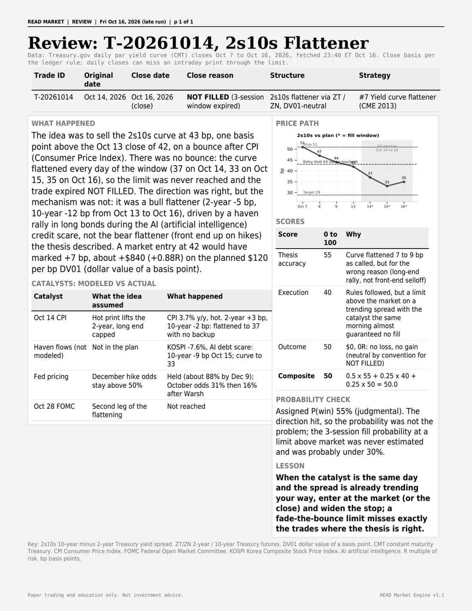
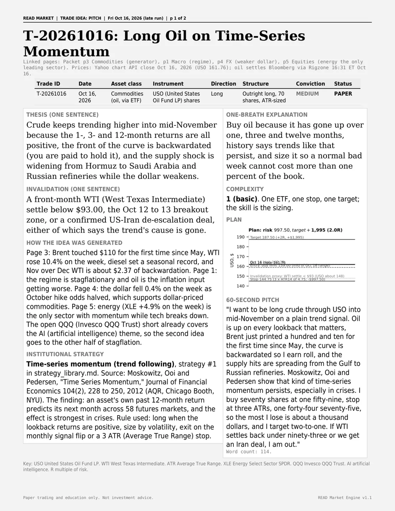

Live, runs daily
READ Market Engine
An automated sales and trading training desk. Every weekday at 8:35am ET it writes a cross-asset market packet, pitches one paper trade, and grades it at the close.
- 6-page packet: macro, rates, commodities, FX, equities, options
- 2-page trade idea on a $100,000 paper book at 1% risk
- Every number sourced and timestamped, "n/a" instead of a guess

